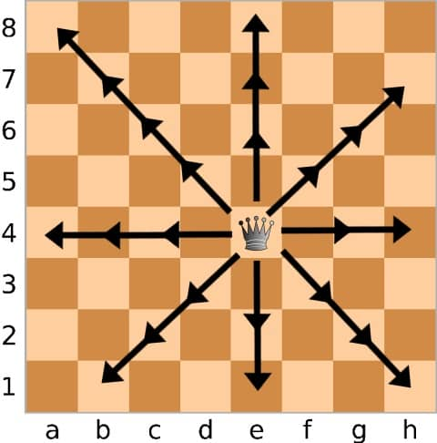

- En ligne
- En colonne
- En diagonal
Sa portée s'étant jusqu'au limite de l'échiquier ou sinon jusqu'à avoir une autre pièce sur son chemin.
Cette pièce est très puissante voir c'est la pièce la plus puissante du jeu car elle est très versatile et peut se déplacer quasi-partout sur l'échiquier.
